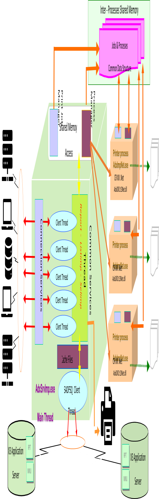

Print Server Presentation and Operation Guide
The SAFE X3 print server processes the print requests coming from the different entities of one or more SAFE X3 solutions in a concurrent manner.
Depending on global system availability, each print request saved at the server level is addressed in a dedicated print process.
The entity that has submitted a request can ask the print server to either recover its current status, modify certain attributes, or delete it at any moment.
The following table shows the different sections of this document:
| Installation / Uninstallation | Configuration | Server startup / stop | Monitoring | Technical architecture | Printer management and error lists | Support and troubleshooting |
Installation / Uninstallation
Prerequisites
Before starting the installation of a print server, check the configuration requirements.
Installation
The installation program allows you to place the executable files, libraries, and other resources necessary for the correct execution of the Print Server in the folder of your choosing. The following tree structure is then created in the installation folder:
- Root folder: Contains all the server binary codes.
- Config folder: Contains a set of XML files:
adxeditionserverconfig.xml,adxeditionserversolutions.xmlandAdxOdbcConfig.xml. These XML files are automatically updated and maintained by the the Administration Console and used:- During server startup: startup parameters.
- Upon automatic creation of the ODBC data source: external descriptions of the ODBC pilots.
- During the implementation cycle: description parameters for the SAFE X3 solutions attached to the server.
- Data folder: Contains all the internal server cache files. It stores, among others, the Crystal Report reports coming from the SAFE X3 applications attached to the server.
- Log folder: Contains:
- The activity log and the exception log (
*.log). - The recovery files used after an unexpected server shutdown (
*.bin). - The report for the server shutdown (
_AdxSrvShutdown_Inf.htm).
- The activity log and the exception log (
- Lan folder: Contains the localization files. If required, these files are updated during patch list installation.
- Temp folder: Collects the temporary files. It must be emptied regularly, depending on its volume. Note: The server has to be stopped when emptying the folder.
- Redist folder: Contains setups of components used by the Print Server, like Microsft ODBC SQL, Oracle InstantClient, Oracle SQL Plus, Microsoft .Net Framework or Microsoft Visual C++ Redistribuable.
- Tools folder: Contains the server administration components driven by the SAFE X3 administration console, as well as the associated utilities.
Uninstallation
Before uninstalling the Print Server, you first need to unpublish the SAFE X3 solutions attached to the Print Server by using the SAFE X3 Administration Console. After, you can go to the control panel and click Add/Remove programs.
Configuration
Like the other Server components of an X3 solution, the Print Server is configured using the Administration Console.
Users should not manually modify the configuration files produced and updated by the Administration Console.
For more information, refer to the Administration Console documentation.
Startup setup
These parameters allow the configuration of the technical execution environment of the Print Server.
They are stored in the adxeditionserverconfig.xml file in the Config folder and include:
<general odbcuserdsn="0" adxsolprf="DEFAULT" lang="ENG" log="0" port="1890" restartrpts="1"
prefixname="Safe_X3_SE_V2" prefixtitle="Safe_X3_SrvEdt_V2_EDT_" description="Sage X3 PrintServer" user="" pwd=""
hostname="" installpath="C:\Sage\SafeX3\PRTSRV" />
<jobs max="300" purgetime="300" successfuljobsstatusretention="10" failedjobsstatusretention="15" vpalloc="40" />

<processes killtime="20" max="5" min="1" maxjobsbyprocess="10" />
<log number="3" size="2000000" />
Example of the
adxeditionserverconfig.xml file:
<AdxSrvImp xmlns:xsi="http://www.w3.org/2001/XMLSchema-instance" xmlns:xsd="http://www.w3.org/2001/XMLSchema">
<config cap="Default configuration" id="DEFAULT">
<general AdxSolPrf="DEFAULT" lang="ENG" log="0" port="1890" restartrpts="1" OdbcUserDSN="0" prefixname="Safe_X3_SE_V2" prefixtitle="Safe_X3_SrvEdt_V2_EDT_" description="Sage X3 PrintServer" user="FranckDep" pwd="" hostname="" installPath="" />
<jobs max="300" purgetime="300" SuccessfulJobsStatusRetention="10" FailedJobsStatusRetention="15" vpalloc="40" />
<log number="3" size="2000000" />
<processes killtime="20" max="5" min="1" maxjobsbyprocess="10" />
</config>
</AdxSrvImp>
Parameters for the description of the attached SAFE X3 solutions
The print server can only process print requests coming from a SAFE X3 technology application that belongs to a published solution.
The parameters used to describe the SAFE X3 solutions attached to the print server are stored in the adxeditionserversolutions.xml file in the Config subfolder.
This file is updated by the SAFE X3 administration console after the publication of a solution.
The tree structure of the file describes a solution profile. This notion is reserved for future use. Currently, only the ADMIN profile code is used.
Each profile has 1 to n solutions, and each solution contains:
- The applications associated with the solution.
- The parameters for the connection to the SADFSQ file server of the solution, including the authentication mode that needs to be used.
- The parameters for the connection to the database server of the solution.
Advanced settings
To be able to run a print server Windows service with a non-administrator user, you can add or modify the REG_DWORD registry entry with a suitable value:
- Availability: EDT.208 or higher.
- Description: Controls the Print Server behavior regarding TCP port and ODBC datasource management.
- Subkey:
HKEY_LOCAL_MACHINE\SOFTWARE\Wow6432Node\ADONIX\SRVIMP\0,1,5,0\GENERAL- Entry: AdvancedSrvOpt.
- Value Type: REG_DWORD, number.
- Valid values range: [0-3].
- 0: The TCP port is registered in the
etc/servicesfile, and the ODBC source is created as a System DSN. - 1: The TCP port is no longer registered in the
etc/servicesfile. - 2: The ODBC source is created as a User DSN.
- 3: Combination of values 1 and 2. With this setting, the Print Server Windows service can be run with a non-administrator user. The default value is 0. Note: You must create the registry sub key with value 3 before you configure the component through the administration console in order to allow the Print Server to run with a non-administrator user.
- 0: The TCP port is registered in the
To be able to turn on debug mode for the Crystal Report U212Ltext.dll embedded functions, you can add or modify the REG_SZ registry entry with a suitable value:
- Availability: EDT.102 or higher.
- Description: Turns on/off the debug mode for the Crystal Report
U212Ltext.dllembedded functions. - Subkey:
HKEY_LOCAL_MACHINE\SOFTWARE\Wow6432Node\ADONIX\SRVIMP\0,1,5,0\REPORT- Entry: U2LTEXT_TraceMode.
- Value Type: REG_SZ, string.
- Valid values range: [ON-OFF].
- OFF: Debug is turned off.
- ON: Debug is turned off, and the trace file is generated in
%TEMP%\u212ltext.log.
Server startup / stop
A Print Server can be started in Console mode or in Windows service mode.
The function of the server is strictly identical in both modes.
The only difference is that in Console mode, server activity is displayed on the screen in the Windows panel.
During the first server configuration from the SAFE Administration Console, the Console automatically creates a Windows Service, associated with the server by default.
You can start and stop this service from the administration console. You can also use standard tools in the Windows system to administer and control the service.
Note: The Print Server startup options described below are available both in Console and Windows Service modes.
- Launch of the server in Recovery mode (
/recovery:status): In case a Print Server unexpectedly shuts down during processing, the stack of print requests that are pending or in progress is serialized in a binary file. The content of this file can be reviewed in the shutdown report stored in the log subfolder (_AdxSrvShutdown_Inf.htmlfile). The Recovery mode is used to tell the server to start loading the previously stored stack of requests before starting the listening service. The print requests that were stopped during the involuntary shutdown are automatically recovered and submitted to the print system. When this option is activated, the recovered requests are stored in the activity log of the server. Note: This option can be used to force the Recovery policy set up in the administration console:- Set the status value to 1 to force the activation of the Recovery mode.
- Set the status value to 0 to force the deactivation of the Recovery mode.
- Activation of the log file (
/d): This option produces a file (AdxSrvlmp_Trace.log) that logs the activity of the Print Server and of the printing processes that are launched. This file is stored in the temporary folder of the Print Server. Note: This option must be used in case of problems to facilitate the analysis and correction of the incidents submitted to the Sage customer care services. - Launch in console mode (
/noservice): This option is used to force the Print Server to run in Console mode, instead of Windows service mode. - Deactivation of the control and configuration of the ODBC sources (
/noodbc): The Print Server uses ODBC data sources to connect to the data servers of the SAFE X3 solutions linked to it. When you launch the server with this option, it does not manage the creation, control and configuration of these data sources. As a result, the user has to create and correctly configure the ODBC data sources, based on the characteristics of the different $$SAFE solutions attached to the server. - Launch using a configuration profile different from the default profile (
/cfg:cdprofil): Reserved for future use. - Deletion of a previously created Windows service (
/rmsvc:cdservice): The Print Server automatically stops after deleting the required service. - Display of the Print Server version (
/v): Available in Console mode only.
Example of a command for server startup and the corresponding output:
AdxSrvImp.exe /noservice /d /verbose /noodbc

Monitoring
You can follow the server activity by consulting the activity log file, Windows Events Viewer, or by accessing the Print Monitor function available in each SAFE X3 folder.
This function is available even if the server has not been started with the /d log file option.
Monitoring window
Connect to the print monitor function (PSIMP) in Classic mode to display this window. Enter the name and port of the Print Server to display data related to the server activity.
From this screen, you can:
- View the server startup parameters.
- View the current TCP/IP sessions.
- View and modify the parameters associated with the requests that are either stacked or in progress.
Monitoring: Service REST
To monitor the Print Server with REST, you need the latest Syracuse Web server.
Note: It is only possible to monitor the Print Server with REST from Print Server 2.29 (2023.10 - 2023 R2) and SyracuseWeb Server 12.0.34 (2023.09 - 2023 R2).
You can monitor the Print Server with REST through the PSIMP page:
Example:
GET http://SyracuseHostname:8124/print/PrintServerHostName:1890/$jobs
[
{
"order": 1,
"rank": 15,
"processId": 0,
"state": "Finished",
"serverDuration": 883,
"processDuration": 10,
"status": "OK",
"phase": "Printing is completed.",
"destination": "File",
"report": "ATABLIST.rpt",
"application": {
"folder": "SEED10",
"host": "FRPO402328.sagefr.adinternal.com",
"port": "20130"
},
"user": "ADMIN",
"workstation": "FRPO402328.sagefr.adinternal.com",
"linked": null
}
]
You can also interrogate the REST Web service with a web browser or with Postman.
To do this, you need to authenticate with admin/admin online.
After anthenticating, you can interrogate the REST webservice.
Example of an interrogations with PrintJobs:
http://aws-x3-indcloud.sagex3rd.local:8124/print/aytrad.sagex3rd.local:1890/$jobs"processId": number [0- 65535]. If processId == 0, means the Print process is finished, otherwise, processId > 0 "state": string ["Finished" / "InProgress" / "Standby"] "status": string ["OK" / "Error"]. Current status of the process. "OK" doesn't mean the process is finished. "serverDuration": time elapse since the process was started. This time is incrementing as long as the job or its status are in the list, even if the process is finished. "processDuration": processing time for this job
Activity log file and exception log file
The activity log file records saving, submission, termination, and deletion events related to a print request.
The exception log file records all errors and anomalies detected by the server.
These log files are activated and set up by the server administration console.
Note: The exception log file automatically inherits the setup of the activity log file. Refer to Configuration for more information.
Windows Events Viewer
All the information, warnings and error messages issued by the print server or one of the print processes are displayed in the Windows Events Viewer.
Technical architecture
The diagram below shows the simplified technical architecture of the print server.
Principles
The Print Server is a multiprocessing server which maintains and controls a pool of specialized processes.
The production of Crystal Report reports is the only function of these processes.
The server manages the preparation and formatting of all the information necessary for the correct production of printouts and the execution of the print processes.
The main logical components of the server are described below:
- TCP/IP listening service: Whenever a client sets up a TCP/IP connection to the Print Server service, it creates a client thread dedicated to the management of the requests coming from this client. There are as many client threads as there are connected clients.
- Technological services: Technological services: These services ensure the integrity of the server, and mainly control the access to shared resources.
A specialized technical service also manages the creation, configuration, and control of the ODBC data sources (Oracle or SQLServer) necessary for the print processes to access the database servers of the attached SAFE X3 solutions.
For Oracle data sources, the Print Server supports versions 9, 10, and 11 of the Oracle Net client, and Wire Protocol type ODBC Oracle drivers.
The user account under which the Print Server is launched requires sufficient rights and privileges to create the ODBC system data sources and the Oracle Net aliases.
The user can manually create the ODBC data sources by using startup option
/noodbc, if required. - Basic services: The Print Server processes basic functional services. The main ones are:
- Saving and formatting the parameters associated with a print request.
- Printer selection.
- Printer configuration.
- Monitoring requests in progress.
- File transfer: Managing a print request coming from a SAFE X3 application often requires to load files stored in this application (for example, the
.rptreport file). The Print Server operates with SAFE X3 (SADFSQ) file servers. It establishes a TCP/IP connection with the corresponding application servers associated with it to communicate with them. - Print processes: When the Print Server finishes preparing a print request, and depending on system availability, it launches a print process that manages the final production of the report. The main task of this print process is to initialize and call the Crystal Report print engine which produces the requested report. A print process then accesses the Print Server shared memory to determine if the server has pending print requests. If it is the case, it will process the first eligible request. If there are no eligible or pending requests, the print process ends automatically. The maximum number of concurrent print processes for a Print Server can be set up using the SAFE X3 administration console.
- Shared memory: The Print Server loads several segments of shared memory to exchange information with the print processes that it is able to create. Access to these segments is carried out in an exclusive manner, based on the interprocess synchronization objects of mutual exclusion type.
Printer management and error lists
The following set of rules make sure the printing operation is carried out correctly:
- If the Print Server is started in Windows service mode, you need to indicate a different startup account from the Local system account so that the Print Server can access one of the printers in your organization. No printer is attached to the Local system Windows account.
- At least one printer must be set up on the user account used to start the Print Server (in Console mode or in Windows service mode).
- The Print Server can only address printers that are visible and accessible to the user account with which the server was started (in Console mode or in Windows service mode).
- When printing in PDF format, the parameters relating to the document size are inherited from the default paper size of the printer associated with the user account with which the server was started (in Console mode or in Windows service mode).

Error codes and messages
The message associated with an error code refers to the following:
- The error code.
- The type of message (64: information; 48: warning; 16: error).
- The function the error came from.
- The context (in the form of a character string).
The error codes generated by the Print Server are referenced below:
Print Server error codes
| Code | Explanation |
|---|---|
| 251 | Waiting time exceeded when an attempt is made to access a shared memory segment. |
| 252 | An attempt to access a shared memory segment was stopped. |
| 253 | Failure during an attempt to access a shared memory segment. |
| 254 | Unable to release the synchronization object to access a shared memory segment. |
| 255 | Unable to write data in a shared memory segment. |
| 256 | Unable to read data in a shared memory segment. |
| 257 | Unable to delete data in a shared memory segment. |
| 258 | Unable to recover the reference associated with the print request number. |
| 259 | Too many requests in the pending request stack. |
| 260 | Error during the submission of a file transfer request. |
| 261 | The SAFE X3 solution description has not been found in the
solutions description file. Check values for parameters received '__APPLICATION=', '__APPRPT=', '__ADXSOL=', '__DBSERVER=', '__DBDATABASE='. Check if this solution is descrived in config `file adxeditionserversolutions.xml` |
| 262 | The connection to the SAFE X3 file server has failed. |
| 263 | Unable to open the configuration file of the print server. |
| 264 | Error during the initialization of the print server configuration file. |
| 265 | Error during the analysis of the print server configuration file. |
| 266 | The total length of the execution parameters for the report is too large. Contact the system administrator. |
| 267 | Error during the storage of the execution parameters of the report. No group memory available. |
| 268 | Error during the reading of the execution parameters for the report. |
| 269 | Error during the deletion of the execution parameters for the report. |
| 270 | Error during the memory transfer of the execution parameters for the report. |
| 271 | Unable to launch a print process. |
| 272 | The initialization context for a print process is absent or has failed. |
| 273 | The print request could not be submitted (request not ready). |
| 274 | The print request could not be submitted (unable to activate the thread). |
| 275 | Error generated by the print engine. |
| 276 | The command line option is unknown. |
| 278 | Unknown error. |
| 279 | Error upon log file initialization. |
| 280 | Error upon opening the "Recovery" files. |
| 281 | Unable to recover a Web preview request. |
| 282 | Unable to recover an already faulty request. |
| 283 | Error upon reading the "Recovery" files. |
| 284 | Error upon saving a "Recovery" request. |
Error codes in the cache management module
| Code | Explanation |
|---|---|
| 181 | Root folder for the cache is not found. |
| 182 | "Application" folder not found. |
| 183 | Unable to access the registry database. |
| 184 | Sage X3 server type unknown. |
| 185 | Transfer type not supported. |
| 186 | File type unknown. |
| 187 | Error upon access/transfer with SAFE X3 (SADFSQ) file server. |
| 188 | Error during the conversion of a character string in Unicode. |
| 189 | Error during the creation of the cache structure. |
| 190 | The current session of the cache manager is not initialized. |
| 191 | Error on opening a local file. |
| 192 | The file server requested does not exist. |
| 193 | Unable to open the local file. |
| 194 | Unable to open the server file. |
| 196 | The local file requested does not exist. |
| 199 | Unable to establish a connection with the distant server. |
| 200 | Error in the reading/writing of the file. |
| 201 | Unable to compare the Timestamps. |
| 202 | Error during the conversion of a Timestamp to the system date. |
| 203 | Error upon deletion of an "Archive" type folder. |
| 204 | Error upon restoration of an "Archive" type folder. |
| 205 | The server archive files could not be found. |
| 239 | Unknown error. |
Error codes for the Windows service management module
| Code | Explanation |
|---|---|
| 361 | Unable to open the "Service Control Manager". |
| 362 | Unable to open the requested service. |
| 363 | Unable to delete the service. |
| 364 | Unable to stop the service. |
| 365 | Unable to stop the service. Number of attempts exceeded. |
| 366 | Unable to start the service. |
| 367 | Unable to start the service. Number of attempts exceeded. |
| 368 | Unable to perform the operation. The service is already started or in the process of being started. |
| 369 | The service already exists. |
| 370 | Unable to create the service. |
Error codes of the SAFE X3 solutions management module
| Code | Explanation |
|---|---|
| 231 | Unable to determine the installation folder for the 'SAFE X3 Solutions' file. |
| 232 | Unable to open the 'SAFE X3 Solutions' file. |
| 233 | Unable to start the analysis of the 'SAFE X3 Solutions' file. |
| 234 | An error has occurred during the analysis of the "SAFE X3 solutions" file. |
Error codes in the ODBC management module
| Code | Explanation |
|---|---|
| 311 | Unable to determine the installation folder for the 'SAFE X3 ODBC Description' file. |
| 312 | Unable to open the 'SAFE X3 ODBC Description' file. |
| 313 | Unable to start the analysis of the 'SAFE X3 ODBC Description' file. |
| 314 | An error has occurred during the analysis of the "SAFE X3 ODBC Description" file. |
| 315 | The driver description has not been found in the "SAFE X3 ODBC Description' file. |
| 316 | Error during the deletion/creation operation for the ODBC data sources. |
| 317 | Error during the creation of an ODBC data source. |
| 318 | Error during the call to an ODBC configuration API. |
| 319 | Unable to open the "TnsNames.ora" file. |
| 320 | Unable to read the "TnsNames.ora" file. |
| 321 | Unable to update the "TnsNames.ora" file. |
| 322 | Unable to recover the installation information for the Oracle*Net client. |
| 323 | Unable to find the Oracle*Net "Tnsnames.ora" configuration file. |
| 324 | Unable to allocate a temporary file to backup the Oracle*Net "Tnsnames.ora" file. |
| 325 | Unexpected error during the configuration of an ODBC source. |
| 326 | Error during the call to a Sql ODBC API. |
| 327 | The connection test for the ODBC data source has failed. |
| 328 | The description parameters for the source have errors or are incomplete. |
| 329 | Unable to create the ODBC data source. |
| 330 | The data source specified does not exist. |
Support and troubleshooting
- Printer management
- Cannot detect previous installed version after a setup crash
- No installed Printer
- Activation of the log files
- Enable logs in SAP VS Studio Crystal Report
- Font size reduced when exporting to PDF
- Chinese characters not correctly displayed in PDF
- Special fonts embedded in PDF documents
- User function Libraries U212LText.dll and U212ltoword
- Parameters sent to the Print Server
Printer management
The following rules must be observed for the Print Server to be able to print correctly:- In case the Print Server is started in Windows Service mode, it is absolutely necessary to specify a boot account other than the Local System account so that the Publisher can address one of the printers in your organization. By default, no printer is attached to the Local System Windows account.
- The user account under which the Print Server has been started in Console mode or in Windows Service mode must at least have a printer configured.
- The Print Server can only send printers visible and accessible by the user account under which the server was started whether in Console mode or Windows Service mode.
- In case of printing with generation of a document in PDF format, document size settings will be inherited from the default printer paper size associated with the user account under which the Print Server was started whether the Print Server is running in Console mode or Windows Service mode.
Cannot detect previous installed version after a setup crash
When a Print Server setup crashes, it sometimes cannot detect the previous version anymore.
When that happens, we need to restore registry entries.
To restore registry entries, a file needs to be created and executed with the following content:
Windows Registry Editor Version 5.00
[HKEY_LOCAL_MACHINE\SOFTWARE\Microsoft\Windows\CurrentVersion\Uninstall\Sage Safe X3 V2 Print Server]
"DisplayName"="Sage Safe X3 V2 Print Server"
"UninstallString"="\"C:\\Program Files\\Java\\jre1.8.0_77\\bin\\javaw.exe\" -jar \"D:\\Sage\\SafeX3\\PRTSRV\\uninstaller\\uninstaller.jar\""
"DisplayVersion"="EDT.226"
"Publisher"="Sage"
"DisplayIcon"="D:\\Sage\\SafeX3\\PRTSRV\\Uninstaller\\UninstallerIcon.ico"
No installed Printer
By default, no printer is attached to the Windows account Local System.
In case the Print Server is started in Windows Service mode, it is essential to specify a startup account different from the Local system account so that the Print Server can address one of the printers in your organization.
The user account under which the Print Server has been started in either Console mode or Windows Service mode must at least have a printer configured.
Activation of the log files
All errors are logged in the application log of the Windows Event Viewer, even if the Print Server trace mode has not been enabled.
If an issue cannot be reproduced, the customer needs to activate traces, play the issue, and send SAGE the traces.
- "/d": This option is used to produce a file that logs the activity of the Print Server and of the launched printing processes.
The file is named
AdxSrvlmp_Trace.logand the resulting log file is stored in the temporary folder of the Print Server:rootPrinterDirectory\Temp.
Example:
C:\Sage\SafeX3\EDTV2\EDTSRV\srvedit\Temp\AdxSrvImp_Trace.log
C:\Sage\SafeX3\EDTV2\EDTSRV\srvedit\Temp\RPT_Trace_ZTESTKO_CrDll_SBELU92.log
Example to modify the Print Server service:
sc config "Safe_X3_SE_V2DEFAULT" binPath= "\"c:\Sage\SafeX3\EDTV2\EDTSRV\srvedit\AdxSrvImp.exe\" /d"
[SC] ChangeServiceConfig réussite(s)
Example to modify the arguments in Service:

Note: In this case, the debug mode will be effective only for the first time you launch the service.
Excerpt of the C:\Sage\SafeX3\EDTV2\EDTSRV\srvedit\Temp\AdxSrvImp_Trace.log file:
**** Function : SrvImpSuper_newRptJob - [3/20 12:53:52:750] ****
- Receipt of a new print request - JobId : 1 - [Date : 3/20 12:53:52:750]
- JobId Settings 1 :
_FormatExport=_28
__REPORT=_TABCOUNTRY.rpt
__DESTINATION=_3
__TYPDBA=_2
__DBDATABASE=_v12026x3
__DBUSER=_SEED
__DBPASSWORD=***
+X3IMP=_matrixw19sql.sagex3rd.local:1890
__wJobID=_SEED-9945-20230320125352-28
__WSTATION=_MATRIXW19SQL.sagex3rd.local
__CDUSER=_ADMIN
__ADXSOL=_V12026X3
__APPLICATION=_SEED;matrixw19sql.sagex3rd.local;20100
__APPRPT=_X3;matrixw19sql.sagex3rd.local;20100
__RPTLAN=_ENG
X3DOS=_SEED;matrixw19sql.sagex3rd.local;20100;150;ENG
__RUNTIME=_MATRIXW19SQL.sagex3rd.local;20100
__JOBLINKED=_
__REQUETE=_2322986
_PreVisuOptions=11111111111111111111
_Orientation=_0
_PaperSize=_1
X3CLI=_SEED folder
X3EDT=_Report Sage Copyright
X3ETA=_TABCOUNTRY
X3TIT=_Country
X3OPE=_System Administrator
X3USR=_ADMIN
X3LAN=_ENG
X3SIT1=_*
X3SIT2=_z
X3PRF=_ADMIN
X3FCT=_
X3SIT=_
paysdeb=_
paysfin=_zzzzzzzzzz
impselections=_0
Excerpt of the C:\Sage\SafeX3\EDTV2\EDTSRV\srvedit\Temp\RPT_Trace_TABCOUNTRY_CrDll_SEED1.log file:
File destination: preparing Crystal Report
Issue file: c:\Sage\SafeX3\PRTSRV\Temp\SEED-9945-20230320125352-28_
Excel format, data only: preparing Crystal Report
CrystalReport start process Document - 3/20/2023 12:53:54 PM
File destination: processing by Crystal Report
** Stage: CrystalReport Document has been processed - Duration: 00:00:01.7220328
** Stage: CrystalReport Document completed - Duration: 00:00:01.7230337
Dispose CrystalReport Document - 3/20/2023 12:53:54 PM
Memory current process : 74 MB / Total Memory: 10399 MB / Free Memory: 907 MB - 3/20/2023 12:53:55 PM
Current process CPU usage : 19.983 % CPU / Global CPU usage : 48.39094 % CPU
End of print process - 3/20/2023 12:53:55 PM
Trace mode of UFLs DLLs
u212ltext.log is generated in Temp folder below the Print Server install path.
Example:
c:\Sage\SafeX3\EDTV2\EDTSRV\srvedit\Temp
Notes:
U212LText.dllused by the Print Server is stored inC:\Windows\crystal.- Crytal Report 2016 uses the Dll
U212IText.dlllocated inC:\Program Files (x86)\SAP BusinessObjects\SAP BusinessObjects Enterprise XI 4.0\win32_x86since Print Server 2.28 (2023.01 - 2023 R1). - Crytal Report 2020 uses the Dll
U212IText.dlllocated inC:\Program Files (x86)\SAP BusinessObjects\SAP BusinessObjects Enterprise XI 4.0\win64_x64since Print Server 2.28.
Example of activating the file via key in the registry:
HKEY_LOCAL_MACHINE\SOFTWARE\Adonix\SRVIMP\0,1,5,0\REPORT\U2LTEXT_TraceMode : ON/OFF
Modules.exe
CR tools allow to see the versions of DLLs/Assemblies loaded in memory. These are used for:
- Checking the version of third-party components.
- Log ODBC: If there's an SGBD error, we can use them to obtain more details besides the CRPE simple error.
- ProcMon.exe: Details about every running processes. Not easy to use.
- Debugger Post-Mortem: Used to exploit a posteriori a crash dump, to locate in the code the line in error (with its stack and all the context of the registers, etc ...)
- Enable logs from Sap VS Studio Crystal Report dlls: In certain cases, Crystal Report blocks the print process. When that happens, these logs can help us identify the issue.
Enable logs in SAP VS Studio Crystal Report
For Crystal Report 2016 and 2020. To use Crystal Reports Designer 2016 and 2020, the Print Server version must be ≥ 2.18.
To enable logs in Crystal Report, save this file with the .reg extension (for example, with the name enableLog.reg) and execute it.
Windows Registry Editor Version 5.00
[HKEY_LOCAL_MACHINE\SOFTWARE\SAP BusinessObjects\Crystal Reports for .NET Framework 4.0\Crystal Reports\Logging]
[HKEY_LOCAL_MACHINE\SOFTWARE\SAP BusinessObjects\Crystal Reports for .NET Framework 4.0\Crystal Reports\Logging\crpe.bkgrnd]
"Destinations"=dword:00000003
"Position"=dword:00000003
"LogErrorsOnly"=dword:00000000
[HKEY_LOCAL_MACHINE\SOFTWARE\SAP BusinessObjects\Crystal Reports for .NET Framework 4.0\Crystal Reports\Logging\crpe.diagnostics]
"Destinations"=dword:00000003
"Position"=dword:00000003
"LogErrorsOnly"=dword:00000000
[HKEY_LOCAL_MACHINE\SOFTWARE\SAP BusinessObjects\Crystal Reports for .NET Framework 4.0\Crystal Reports\Logging\crpe.functions]
"Destinations"=dword:00000003
"LogErrorsOnly"=dword:00000000
"Position"=dword:00000003
[HKEY_LOCAL_MACHINE\SOFTWARE\Wow6432Node\SAP BusinessObjects\Crystal Reports for .NET Framework 4.0\Crystal Reports\Logging]
[HKEY_LOCAL_MACHINE\SOFTWARE\Wow6432Node\SAP BusinessObjects\Crystal Reports for .NET Framework 4.0\Crystal Reports\Logging\crpe.bkgrnd]
"Destinations"=dword:00000003
"Position"=dword:00000003
"LogErrorsOnly"=dword:00000000
[HKEY_LOCAL_MACHINE\SOFTWARE\Wow6432Node\SAP BusinessObjects\Crystal Reports for .NET Framework 4.0\Crystal Reports\Logging\crpe.diagnostics]
"Destinations"=dword:00000003
"Position"=dword:00000003
"LogErrorsOnly"=dword:00000000
[HKEY_LOCAL_MACHINE\SOFTWARE\Wow6432Node\SAP BusinessObjects\Crystal Reports for .NET Framework 4.0\Crystal Reports\Logging\crpe.functions]
"Destinations"=dword:00000003
"LogErrorsOnly"=dword:00000000
"Position"=dword:00000003
Logs are located in the User Profile TEMP directory: C:\Users\[userId]\AppData\Local\Temp.
The UserId is the account Id linked to the Print Server service. It is this account that launches the Print processes.
Inside that folder, log files show up with the .glf extension.
AdxImpNet_bkgrnd_51664_2020_05_06_12_07_24_340_trace.glf AdxImpNet_Diagnostics_51664_2020_05_06_12_07_23_199_trace.glf AdxImpNet_functions_51664_2020_05_06_12_07_23_205_trace.glfHow to disable logging:
Windows Registry Editor Version 5.00 [HKEY_LOCAL_MACHINE\SOFTWARE\SAP BusinessObjects\Crystal Reports for .NET Framework 4.0\Crystal Reports\Logging] [HKEY_LOCAL_MACHINE\SOFTWARE\SAP BusinessObjects\Crystal Reports for .NET Framework 4.0\Crystal Reports\Logging\crpe.bkgrnd] "Destinations"=dword:00000000 "Position"=dword:00000000 "LogErrorsOnly"=dword:00000000 [HKEY_LOCAL_MACHINE\SOFTWARE\SAP BusinessObjects\Crystal Reports for .NET Framework 4.0\Crystal Reports\Logging\crpe.diagnostics] "Destinations"=dword:00000000 "Position"=dword:00000000 "LogErrorsOnly"=dword:00000000 [HKEY_LOCAL_MACHINE\SOFTWARE\SAP BusinessObjects\Crystal Reports for .NET Framework 4.0\Crystal Reports\Logging\crpe.functions] "Destinations"=dword:00000000 "LogErrorsOnly"=dword:00000000 "Position"=dword:00000000 [HKEY_LOCAL_MACHINE\SOFTWARE\Wow6432Node\SAP BusinessObjects\Crystal Reports for .NET Framework 4.0\Crystal Reports\Logging] [HKEY_LOCAL_MACHINE\SOFTWARE\Wow6432Node\SAP BusinessObjects\Crystal Reports for .NET Framework 4.0\Crystal Reports\Logging\crpe.bkgrnd] "Destinations"=dword:00000000 "Position"=dword:00000000 "LogErrorsOnly"=dword:00000000 [HKEY_LOCAL_MACHINE\SOFTWARE\Wow6432Node\SAP BusinessObjects\Crystal Reports for .NET Framework 4.0\Crystal Reports\Logging\crpe.diagnostics] "Destinations"=dword:00000000 "Position"=dword:00000000 "LogErrorsOnly"=dword:00000000 [HKEY_LOCAL_MACHINE\SOFTWARE\Wow6432Node\SAP BusinessObjects\Crystal Reports for .NET Framework 4.0\Crystal Reports\Logging\crpe.functions] "Destinations"=dword:00000000 "LogErrorsOnly"=dword:00000000 "Position"=dword:00000000
Font size reduced when exporting to PDF
When you use some specific fonts like BarCodes (BarcodeEAN13) and export a report to PDF format, the font size can be slightly reduced compared to the size that appears in the Crystal Reports designer and in printed output.
The CrystalReport PDF export engine can be modified to incorporate a new algorithm that positions characters precisely to prevent truncation from ocurring while maintaining the correct font size. This algorithm can be activated and controlled by two new registry keys. These keys are:
[HKEY_LOCAL_MACHINE\SOFTWARE\WOW6432Node\SAP BusinessObjects\Crystal Reports for .NET Framework 4.0\Crystal Reports\Export\Pdf] "UsePrecisePositioningForText"=dword:00000001
[HKEY_LOCAL_MACHINE\SOFTWARE\WOW6432Node\SAP BusinessObjects\Crystal Reports for .NET Framework 4.0\Crystal] Reports\Export\Pdf" TruncationAdjustment"=dword:00000002
The UsePrecisePositioningForText key turns on the new functionality when it is set to 1. When this functionality is activated, the ForceLargerFonts key is ignored.
The TruncationAdjustment key controls a width calculation rounding function in the new algorithm and accepts values between 0 and 10 inclusively.
The default value of 2 has been tested to sufficiently eliminate most truncation issues. If truncation is still observed, this value can be increased for added granularity.
Known Limitations
When the UsePrecisePositioningForText key is turned on, there are several side-effects:
- Exporting to PDF may take slightly longer, but no more than 10% longer.
- The exported PDF document will increase in size over the standard outputand Crystal Reports will consume more GDI resources during the export. For more information, check:
Chinese characters not correctly displayed in PDF
Chinese or arabic characters are not correctly displayed in PDF document generated by the Print Server.
These characters could come from formula or the database, or be stored in localmenus.
Example of a field containing a formula:
textofchapter("SEED;matrixw19;20101",{?X3LAN},1,2)
See the SAP Crystal Report for this issue
To fix this issue, please edit your report with Crystal Report Designer, choose the field containing the formula and change the font from Arial to Arial Unicode MS.
Since Print Server 2.24 (2021.07 - 2021 R3), a new feature avoids all your reports and replaces every text field using Arial and replacing Arial font by Arial Unicode MS automatically.
To activate this feature, pleace edit your registry and this key:
Subkey: HKEY_LOCAL_MACHINE\SOFTWARE\Wow6432Node\ADONIX\SRVIMP\0,1,5,0\GENERAL
- Entry: ForceUnicodeFont
- Value Type: REG_SZ, string
Valid values Range: [0-1] or [ON - OFF]
0: Conversion feature is turned OFF
1: Convert all fields using "Arial" font to "Arial Unicode MS" to avoid any issues with Asian characters
The default font used for unicode is 'Arial Unicode MS', to change this default font, create or edit this registry key 'UnicodeFont' :
Computer\HKEY_LOCAL_MACHINE\SOFTWARE\WOW6432Node\Adonix\SRVIMP\0,1,5,0\REPORT
UnicodeFont : "Arial Unicode MS"
UnicodeFont : "GNU Unifont"
Since Print Server 2.25 (2022.01 - 2022 R1), you can force every field to use a specific Non Unicode font. To active this feature, please edit your registry and this key:
Add registry parameter:
Computer\HKEY_LOCAL_MACHINE\SOFTWARE\WOW6432Node\Adonix\SRVIMP\0,1,5,0\REPORT
ForceNonUnicodeFont : 1
Add registry 'NonUnicodeFont' to specify NON UNICODE fonts to use.
The default font used for non unicode is 'Courier New', to change this default font.
Computer\HKEY_LOCAL_MACHINE\SOFTWARE\WOW6432Node\Adonix\SRVIMP\0,1,5,0\REPORT
NonUnicodeFont : "Courier New"
Special fonts embedded in PDF documents
If you're using non standard fonts in your reports for BarCodes, specific fonts for icons, bank checks and so on, you need to check the licence and properties of the font.
The licence determines if the font can be embedded in PDF documents or not.
To verify the embedded security level of a font, review the font properties.
If the security level contains No-embedding permissions, then exporting to PDF will not be successful.
For the utility to allow you to view the embedded security level of a font, download the font properties extension from Microsoft's web site.
True Type Fonts (TTF) has embedding permissions that determine if they can be converted into an embedded font format.
The permissions associated with the embedded security level of a font are as follows:
- No-embedding: This does not allow fonts to be embedded. Contact the font vendor to request a possible upgrade to an embeddable font.
- Print and preview: This allows fonts to be embedded. However, only within pages that remains static on the client computer. If a page allows fonts to be changed, then editable or installable fonts are required. Examples of a page that allows fonts to be changed are an online Java-based word processor or an email editor.
- Editable: This allows fonts to be embedded using a tool such as Microsoft Web Embedding Fonts Tools (WEFT) beyond the limitations of the print and preview permissions.
- Installable: This allows fonts to be embedded similar to the "Editable" permissions. Note that installable fonts are not installed in the visitors' fonts folder.
You can find more information on special fonts in the following links:
- 1214944 - What font types are supported in Crystal Reports?[]()
- An open-source licensed Type 1 MICR E13-B font
- Embeding full set of fonts when exporting to PDF from a Crystal Reports file
- Free MICR font (Turn blank security paper into check stock)
- Font is not allowed to be embedded in document when exporting report to PDF for Crystal Designer
User function Libraries U212LText.dll and U212ltoword
Crystal Report extensions to publish proprietary functions from a SAP Crystal Report form field.
Depending on the use case, these DLLs are loaded by Crystal Report Designer and/or CRPE .Net.
They are never directly loaded by the Print Server (AdxSrvImp and AdxImpNet), but called by SAP CR Engine or SAP CR Designer.
Location on the Sage Print Server station:
C:\Program Files (x86)\SAP BusinessObjects\Crystal Reports for .NET Framework 4.0\Common\SAP BusinessObjects Enterprise XI 4.0\win32_x86 and Print Server <= 2.27. Note: C:\Windows\crystal doesn't exist since Print Server 2.25. C:\Windows\crystal
Directory C:\Windows\crystal, containing U212IText.dll, U212Itoword.dll and u2lbcode.dll, is no more created and used by the Print Server >= 2.28.
For Print Server >= 2.28:
C:\Program Files (x86)\SAP BusinessObjects\SAP BusinessObjects Enterprise XI 4.0\win64_x64 used by SAP Crystal Reports Designer 2020 C:\Program Files (x86)\SAP BusinessObjects\Crystal Reports for .NET Framework 4.0\Common\SAP BusinessObjects Enterprise XI 4.0\win32_x86 used by X3 Print Server and SAP Crystal Reports Designer < 2016 C:\Program Files (x86)\SAP BusinessObjects\SAP BusinessObjects Enterprise XI 4.0\win32_x86 used by SAP Crystal Reports Designer 2016
U212LText.dll
Supports menu-local and translatable text fields.
It is applied to cache-managed resource files.
These specialized functions allow you to insert or perform specific calculations on data managed by the X3 information systes and can be incorporated into Crystal Reports intended to run in an X3 application.
Behavior of U2LText functions when there is no local menu description:
- If the local menu number or the message number passed as an argument of one of the ad hoc functions of the
U2LTextdoes not exist in themenuCdLangdescription file, the function no longer returns an error, but returns as default an an empty string. A warning message is nevertheless written in the trace file of the DLL.
Menus are downloaded by the Print Server from the current X3 folderID and stored in its filesytem: c:\\Sage\srvedit\Data\[Folder]_[Hostname]_[Runtime Port]\GEN\ALL\MENL. For example:
C:\Sage\SafeX3\EDTV2\EDTSRVFRDEP\srvedit\Data\SEED_po027493_20192\GEN\ALL\MENL
The dir C:\Sage\SafeX3\EDTV2\EDTSRVFRDEP\srvedit\Data\SEED_po027493_20192\GEN\ALL\MENL file contains the following data:
menuarb
menuaus
menubra
menubri
menuchi
menueng
menufra
menuger
menuita
menupol
menupor
menus
menuspa
textraarb
textraaus
textrabra
textrabri
textrachi
textraeng
textrafra
textrager
textraita
textrapol
textrapor
textraspa
Excerpt of the menueng file:
1
NO
No
Yes
|
2
RCMAD>< Previous
> Last
X Sel
Table
# Code
Page +
Page -
End
Ex
|
3
123
Yes / No
Total / Inquiry
Object
|
4
DOH
Decimal
Octal
Hexadecimal
|
5
35
3 ½ inches
5 ¼ inches
Function TextForCode
This function returns the label associated with the message number of a SAGE X3 field.
By default, the description is returned in the connection language.
Parameters:
- Application key: Key of the application in the form
Folder;Server;Port;Version;Language. - Field name: X3 fieldname with the form
«{tablename.fieldname}». - Message number: Value of the message number.
- Return: Message label in the requested language.
Note: The function uses the
menus and menu [lang] files as input. For example:
TextForCode("PRODV140;prodsrv;1940;140;ENG","ACONSULT.MODULE", 8)
Function TranslatedTextForCode
is function returns the label associated to a message number from an X3 field, in the requested language.
Parameters:
- Application key: In the form
Folder;Server;Port;Version;Language. - Language code: FRA, ENG, SPA, ITA, BRI, POR.
- Field name.
- Message number.
For example:
TranslatedTextForCode("PRODV140;prodsrv ;1940;140","FRA","ACONSULT.MODE", 8)
Function TextOfChapter
This function returns the label associated with the message number of an X3 local menu, in the requested language.
Parameters:
- Application key: In the form
FOLDER;HOST;PORT;VERSION;LANGUAGE. - Language code: FRA, ENG, SPA, ITA, BRI, POR.
- Message number.
- Return: Label in the specified language.
For example:
TextOfChapter("PRODV140;prodsrv;1940;140","FRA", 2229, 8)
An example with variables:
textofchapter({?X3DOS},{?X3LAN},1,3)
Function X3TranslatedText
This function returns the label associated with the alphanumeric key of an application text, in the requested language.
Parameters:
- Application key: In the form
Folder;Server;Port;Version;Language. - Language code: FRA, ENG, SPA, ITA, BRI, POR.
- Text key: Application text key in the form Nom
table~Nom champ~Identifiant 1~Identifiant 2~. Please note that the "~" character corresponds to the field separator. It is obligatory. - Return: Text in the specified language.
For example:
X3TranslatedText ("PRODV140;prodsrv ;1940 ","SPA", "PFOOTINV~SHOAXX~50~ ~" )
Example:
Debug U212LText:
U212LText.dll offers support for menu-local and translatable text fields.
It is applied to cache-managed resource files.
Registry:
HKEY_LOCAL_MACHINE\SOFTWARE\WOW6432Node\Adonix\SRVIMP\0,1,5,0\REPORT PrintEngine : 0 U2LTEXT_TraceMode : OFF U2LTOWORD_TraceMode : OFF
U2LTEXT_TraceMode can be set to ON or OFF depending if trace is activated or disabled.
If trace is activated, the resulting log file name is named U212ltext.log and is generally saved in the temp directory Documents & Settings of the user profile.
Example:
C:\Users\frdepo\AppData\Local\Temp\U212ltext.log
Example of a U212ltext.log file:
*****************************************
* Sage® X3 Print Services *
* U212LText.dll Trace File *
*****************************************
==> Start Fct [InitForJob] - Id [4]
- INFORMATION : DLL Version [EDT.2.999]
- INFORMATION : DLL Location [C:\windows\crystal\U212LText.dll]
- INFORMATION : Caller Module Name[Edition Server V5 (220000)]
- INFORMATION : Caller Module Full Name[C:\Source\X3\print-server224\src\server\bin\Debug\ConsolePrintNet.exe]
- INFORMATION : Start Time [3/30 21:33:40:958]
- WARNING : Unable to find Default Language in General Registry [Software\Adonix\x3\0,1,4,0\]
Note: The Dll file was located in C:\windows\crystal\U212LText.dll until Print Server 2.27.
- UFL Libraries
U212IText.dllandU212Itoword.dllare compiled in 64 bits and copied in the following folder from Print Server >= 2.28:C:\Program Files (x86)\SAP BusinessObjects\SAP BusinessObjects Enterprise XI 4.0\win64_x64(used by SAP CR 2020). - 32 bits UFL Libraries
U212IText.dllandU212Itoword.dllare still copied to the folder:C:\Program Files (x86)\SAP BusinessObjects\Crystal Reports for .NET Framework 4.0\Common\SAP BusinessObjects Enterprise XI 4.0\win32_x86(used by X3 Print Server and SAP CR > 2016) andC:\Program Files (x86)\SAP BusinessObjects\SAP BusinessObjects Enterprise XI 4.0\win32_x86(used by SAP CR 2016). - Directory
C:\Windows\crystal, containingU212IText.dll,U212Itoword.dllandu2lbcode.dll, is no more created and used by the Print Server >= 2.28. The PrintEngine will use UFL libraries located inC:\Program Files (x86)\SAP BusinessObjects\Crystal Reports for .NET Framework 4.0\Common\SAP BusinessObjects Enterprise XI 4.0\win32_x86.
U212ltoword.dll
AmountToWord: Conversion of amounts into letters (multi-language/multi-currency) relies on language/currency description files delivered.
Special Features:
- The externalization of currencies for a language is carried out in a local file, as well as a default language and currency in a local file.
The supported languages are:
- French
- English
- German
- Spanish
- Italian
- Portuguese
- Dutch
- Russian
- Polish
File location: The U212ltoword.dll library must be placed under C:\Program Files (x86)\SAP BusinessObjects\Crystal Reports for .NET Framework 4.0\Common\SAP BusinessObjects Enterprise XI 4.0\win32_x86 of Program Files (x86) installation directory.
The 8 text files .txt must be placed in the sub-directory lan from the installation directory of the Print Server.
X3CurFRA.txt X3CurENG.txt X3CuDEU.txt X3CurSPA.txt X3CurITL.txt X3CurPOR.txt X3CurNLD.txt X3CurDFT.txt
Each text file contains the definition of currencies of a managed language. The X3CurDFT.txt file contains the default language as well as the definition of the default currencies.
File structure:
#FRA BEF;franc belge;francs belge;centime;centimes ESP;peseta;pesetas;; EUR;euro;euros;centime;centimes DEM;deutsche mark;deutsche marks;pfennig;pfennig FRF;franc;francs;centime;centimes FRS;franc suisse;francs suisse;centime;centimes GBP;livre;livres;penny;pence GRD;drachme;drachmes;; ITL;lire;lires;centesimo;centesimi; JPY;yen;yens;sen;sen LUF;franc luxembourgeois;francs luxembourgeois;centime;centimes PTE;escudo;escudos;; USD;US dollar;US dollars;US cent;US cents
Note: FRA is the default language. It is only used in the X3CurDFT.txt file. The other lines define the currencies for a language.
Function AmountToWord
Description of the AmountToWord formula.
Arguments:
- Application key: With the Format
folder/server/port. - Language.
- Currency.
- Amount in digit.
- Return: Amount in letters in the requested currency and language.
Note: If the language set as parameter to AmountToWorld is not supported, the program will look for the default language in the default currency file. The default language is indicated in file X3CurDFT.txt.
Example:
#ENG define English as default language.
Example:
AmountToWord("PRODV140;prodsrv;1940 ", "SPA" "EUR", 256.80)
Function AmountToDigit
Description of the AmountToDigit formula.
Arguments:
- Application key: Folder/server/port - X3DOS parameter.
- Print language.
- Currency.
- Amount in digits.
- Decimal display flag: (True = letter, False = number)
- Return: Formatted strings containing 11 fields. The first field corresponds to the value of the decimal part (digit or letter based on the Flag), the second field corresponds to the digit/letter of the amount unit, the third field corresponds to the digit/letter of the tens... The eleventh field corresponds to the digit/letter of the billions.
Note: If the decimal display flag is equal to True, the note for the AmountToWord formula also applies here.
Debug U212ltoword
Registry:
HKEY_LOCAL_MACHINE\SOFTWARE\WOW6432Node\Adonix\SRVIMP\0,1,5,0\REPORT U2LTOWORD_TraceMode: ON/OFF
If the value of the key U2LTOWORD_TraceMode is ON, DebugMode is activated.
This means every call to the U212ltoword library, from SAP Crystal Report Designer or from the Print Server calling SAP Crystal Report Engine, will write to a log file named u212lToWord.log localized in the TEMP to the user running the dll.
Example:
C:\Users\frdepo\AppData\Local\Temp\u212lToWord.log
Example of the content of u212lToWord.log:
*****************************************
* Sage® X3 Print Services *
* U212LText.dll Trace File *
*****************************************
==> Start Fct [InitForJob] - Id [2]
- INFORMATION : DLL Version [EDT.9.9]
- INFORMATION : DLL Location [C:\Program Files (x86)\SAP BusinessObjects\SAP BusinessObjects Enterprise XI 4.0\win64_x64\U212IText.dll]
- INFORMATION : Caller Module Name[Unknown (0)]
- INFORMATION : Caller Module Full Name[C:\Program Files (x86)\SAP BusinessObjects\SAP BusinessObjects Enterprise XI 4.0\win64_x64\crw64.exe]
- INFORMATION : Start Time [5/15 14:12:19:566]
==> End Fct [InitForJob] - Id [2]
==> Start Fct "TextForCode" - [5/15 14:12:19:609]
- Keys : SEED10;frpo402328;20130 (Folder/Host/Port) SEED10/frpo402328/20130
- Application parameter : [SEED10;frpo402328;20130] with final CdLang [ENG]
- Application version is : [150]
- INFORMATION : Before to load Menu [645] from [c:\Sage\SafeX3\PRTSRV\Data\SEED10_frpo402328_20130\GEN\ALL\MENL\menuENG] - [5/15 14:12:19:651]
- INFORMATION : Statement processed without error. Raw value: 'Invoice' - UTF8 Value returned: 'Invoice'
==> End Fct "TextForCode" - - [5/15 14:12:19:668]
==> Start Fct "TextForCode" - [5/15 14:12:19:681]
- Application parameter : [SEED10;frpo402328;20130] with final CdLang [ENG]
- Application version is : [150]
- INFORMATION : Menu [645] found in cache
- INFORMATION : Statement processed without error. Raw value: 'Debit note' - UTF8 Value returned: 'Debit note'
==> End Fct "TextForCode" - - [5/15 14:12:19:737]
==> Start Fct [TermForJob] - Id [2]
==> Release gpMenu
- INFORMATION : Stop Time [5/15 14:13:33:962]
==> End Fct [TermForJob] - Id [2]
Note: Since Print Server >= 2.28, AmountToWordTest calls the function AmountToWord() contained in the library U212ltoword.dll in the command line:
AmountToWord TU Usage AmountToWordTest.exe -lang [ENG, FRA, ITA... ] -cur [EUR, USD, ...] -start [number] -end [number] AmountToWordTest.exe -lang FRA -cur EUR -start 3 -end 10 AmountToWord 3.000000 EUR ENG three Euros AmountToWord 4.000000 EUR ENG four Euros AmountToWord 5.000000 EUR ENG five Euros AmountToWord 6.000000 EUR ENG six Euros AmountToWord 7.000000 EUR ENG seven Euros AmountToWord 8.000000 EUR ENG eight Euros AmountToWord 9.000000 EUR ENG nine Euros AmountToWord 10.000000 EUR ENG ten Euros
Parameters sent to the Print Server
**** Function : SrvImpSuper_newRptJob - [1/17 15:38:10:6] ****
- Réception d'une nouvelle demande d'impression - JobId : 1 - [Date : 1/17 15:38:10:7]
- Paramètres du JobId 1 :
_FormatExport=_29
_PrinterName=_\\ser-psafo02\SAGEPRINTER
_PrinterServer=_vcsx3v11.sagefr.adinternal.com:1890
_PrinterDriver=_KONICA MINOLTA C364SeriesPCL SP
_PrinterPort=_SECURE,SECURE2
_PrinterDescriptionEx=_1|000258|000009|||
_Orientation=_0
_PrinterCopies=_1
_PrinterCollate=_0
_PrinterStartPage=_1
_PrinterStopPage=_9999
__REPORT=_TABCOUNTRY.rpt
__DESTINATION=_1
__TYPDBA=_2
__DBDATABASE=_x3v11sql
__DBUSER=_SUPERV
__DBPASSWORD=***
+X3IMP=_vcsx3v11.sagefr.adinternal.com:1890
__WSTATION=_VCSX3V11.sagefr.adinternal.com
__CDUSER=_ADMIN
__ADXSOL=_V11SQL
__APPLICATION=_SUPERV;vcsx3v11.sagefr.adinternal.com;18111
__APPRPT=_X3;vcsx3v11.sagefr.adinternal.com;18111
__RPTLAN=_FRA
X3DOS=_SUPERV;vcsx3v11.sagefr.adinternal.com;18111;150;FRA
__JOBLINKED=_
__REQUETE=_5042306
_PreVisuOptions=11111111111111111111
X3CLI=_SEED folder
X3EDT=_Etat Sage X3 Copyright Sage
X3ETA=_TABCOUNTRY
X3TIT=_Pays
X3OPE=_Administrateur système
X3USR=_ADMIN
X3LAN=_FRA
X3SIT1=_*
X3SIT2=_z
X3PRF=_ADMIN
X3FCT=_
X3SIT=_
paysdeb=_A
paysfin=_A
impselections=_0

_FormatExport
Exports a file to a specific format. By default, the export format is PDF.
The main supported formats in the Print Server engine and Crystal Report are:
- RPT
- Word/RTF
- Excel
A default export format is stored for each destination (PREVIEW, EXCEL, PRINT, etc) in the database.
_FormatExport=29
CRYSTAL_FORMAT_RPT 1 // Seagate Crystal Reports (RPT)
CRYSTAL_FORMAT_WORDWIN 3 // Word for Windows
CRYSTAL_FORMAT_RTF 5 // RTF
CRYSTAL_FORMAT_TEXT 9 // Text
CRYSTAL_FORMAT_EXCEL8TAB 28 // Excel 8 étendu
CRYSTAL_FORMAT_PDF 29 // PDF
A default export format is stored for each destination (PREVIEW, EXCEL, PRINT, etc) in the database.
The default format is linked to a destination is stored in table [SCHEMA].[APRINTER], field PRTFMT_0:
__DESTINATION
__DESTINATION=_1 CRYSTAL_DESTINATION_WINDOW: 0, CRYSTAL_DESTINATION_PRINTER: 1, CRYSTAL_DESTINATION_MAILMAPI: 2, CRYSTAL_DESTINATION_FILE: 3, CRYSTAL_DESTINATION_MAILVIM: 4, CRYSTAL_DESTINATION_NOTES: 5, CRYSTAL_DESTINATION_EXCHANGEFOLDER: 6
__TYPDBA
__TYPDBA=_2 (ODBCCFG_DB_ORACLE: 1, ODBCCFG_DB_SQLSERVER : 2)
__DOCUMENT
Manages printing attachments.
One or several files separated by character ";" can be linked to a report.
Example with two attached documents:
__DOCUMENT=_c:\\Sage\\LOCAL95\\dossiers\\SEED\\DEC\\ATTACHED1.pdf;c:\\Sage\\LOCAL95\\dossiers\\SEED\\DEC\\ATTACHED2.pdf"
These files are printed if destination==Printer. Otherwise, the destination is considered as file, and they are copied to a folder specified in the parameter _ExportFile.
_ExportFile
_ExportFile is linked to the parameter __DOCUMENT to indicate a destination folder for attached documents.
This value is read only if CRYSTAL_DESTINATION_FILE is set to 3. Otherwise, it will be ignored if the destination is a real printer (CRYSTAL_DESTINATION_PRINTER: 1).
Example:
_ExportFile="C:\\Sage\\LOCAL95\\dossiers\\SEED\\EINV\\"
Note: Attached documents specified in the parameter __DOCUMENT will be copied to this folder.
_Orientation
-1 = Default orientation 1 = PORTRAIT 2 = LANDSCAPE
_PaperSize
If destination is a Printer (__DESTINATION=1), this parameter will not be read.
If it's a real Printer, the parameter _PrinterDescriptionEx is required to exist for _PaperSize to be read.
Note: The parameters _PrinterName, _PrinterServer, _PrinterPort, _PrinterDescriptionEx, _Orientation, _PrinterCopies appear only if the destination is a Printer.
_PrinterName
Specifies the IP adress or hostname of the print.
Example:
\\ser-psafo02\SAGEPRINTER
_PrinterServer
Specifies the hostname and port where SAGE X3 PrintServer software is available.
The PrintJob will be sent to this PrintServer.
Example:
vcsx3v11.sagefr.adinternal.com:1890
_PrinterDriver
Specifies the name of the Printer as shown in the list of Printers in Windows.
Example:
_PrinterDriver=KONICA MINOLTA C364SeriesPCL SP
_PrinterPort
Specifies the authentication protocol to use.
Example:
_PrinterPort=SECURE,SECURE2
_PrinterDescriptionEx
Specifies the kind of papersize and cassette to use on the Printer.
Example:
parameter _PrinterDescriptionEx=1|000258|000009||| Pattern : duplex|paper source|paper size|paper height|paper width|
Duplex
Duplex printing means that you can print on both sides of the paper with your printer either automatically or manually by turning the paper over after the first side has printed.
To duplex print, your model will need to have the functionality built-in.
Simplex printing, on the other hand, only allows for printing on one side of the paper.
empty value, 0 or 1 1 = Duplex mode is supported by the printer.
Paper source
Value depends of the Printer and its capabilities.
-1 : AutoSelect / Default paper source on the printer device. XX : Cassette 1 XX : Cassette 2 XX : Cassette 3
Paper size
if value equals -1 or empty = default format paper
1 = letter US
8 = A3
9 = A4
11 = A5
256 = defined by the 3 following parameters
Example A:
_PrinterDescriptionEx=1|000258|000009||| Pattern : duplex|paper source|paper size|paper height|paper width|
This pattern means that:
- The Printer can use the Duplex mode.
- Cassette id 258: This id is different for each Printer.
- 09: Paper size A4.
- The next field are empty but characters | are necessary. There are not read because its a standard and predefined size.
Example B:
_PrinterDescriptionEx=1|000258|||| Pattern : duplex|paper source|paper size|paper height|paper width|
This pattern means that:
- The Printer can use the Duplex mode.
- Cassette id 258: This id is different for each Printer.
- Paper size = empty. That printer will use its default paper size.
- Paper height = empty value. Even if there would be a value, that wont be read because the previous number <> 256.
- Paper width = empty value
Example C:
_PrinterDescriptionEx=1|000258|256|15840|12240| Pattern : duplex|paper source|paper size|paper height|paper width|
This pattern means that:
- The Printer can use the Duplex mode.
- Cassette id 258: This id is different for each Printer.
- paper size = 256. Means paper size is defined by the 3 following parameters.
- paper height = 15840 twips
- paper width = 12240 twips
Note: Most measurement in Crystal Reports are in twips. A twip is 1/20 of a point or 1/1440 of an inch. There are aproximately 567 twip in a centimeter. This means a standard 8.1/2 x 11 inch sheet of a paper is 12240 x 15840 twips, or 21.6 cm x 27.9 cm.
Full range of values:
1 = Letter 8 1/2 x 11 in 2 = Letter Small 8 1/2 x 11 in 3 = Tabloid 11 x 17 in 4 = Ledger 17 x 11 in 5 = Legal 8 1/2 x 14 in 6 = Statement 5 1/2 x 8 1/2 in 7 = Executive 7 1/4 x 10 1/2 in 8 = A3 297 x 420 mm 9 = A4 210 x 297 mm 10 = A4 Small 210 x 297 mm 11 = A5 148 x 210 mm 12 = B4 (JIS) 250 x 354 13 = B5 (JIS) 182 x 257 mm 14 = Folio 8 1/2 x 13 in 15 = Quarto 215 x 275 mm 16 = 10x14 in 17 = 11x17 in 18 = Note 8 1/2 x 11 in 19 = Envelope #9 3 7/8 x 8 7/8 20 = Envelope #10 4 1/8 x 9 1/2 21 = Envelope #11 4 1/2 x 10 3/8 22 = Envelope #12 4 \276 x 11 23 = Envelope #14 5 x 11 1/2 24 = C size sheet 25 = D size sheet 26 = E size sheet 27 = Envelope DL 110 x 220mm 28 = Envelope C5 162 x 229 mm 29 = Envelope C3 324 x 458 mm 30 = Envelope C4 229 x 324 mm 31 = Envelope C6 114 x 162 mm 32 = Envelope C65 114 x 229 mm 33 = Envelope B4 250 x 353 mm 34 = Envelope B5 176 x 250 mm 35 = Envelope B6 176 x 125 mm 36 = Envelope 110 x 230 mm 37 = Envelope Monarch 3.875 x 7.5 in 38 = 6 3/4 Envelope 3 5/8 x 6 1/2 in 39 = US Std Fanfold 14 7/8 x 11 in 40 = German Std Fanfold 8 1/2 x 12 in 41 = German Legal Fanfold 8 1/2 x 13 in
More information on paper sizes can be found on the official documentation on the Microsoft site.
Example:
Pattern : duplex|paper source|paper size|paper height|paper width| ZEBRA |000004|000256|000508|001680|
It is important to configure the default parameters correctly to be able to use the Printer:

Pattern : duplex|paper source|paper size|paper height|paper width|
ECT |000004||||
The value "paper size" is empty, so the Print Server will use the default parameters for the printer and driver.
The parameter _PrinterDescriptionEx is automatically filled by the Printer an its driver when the printer is created.
The Print Server request the printer and its driver and the result is created in table APRINTDES.
Exemple of one entry of the table APRINTDES:
See fields [APRINTDES].[PRTDES_0] and [APRINTDES].[PRTDESEX_0]
[X3].[APRINTDES], [UPDTICK_0] [int], [COD_0] [nvarchar](10), [NUM_0] [int],[PRTDES_0] [nvarchar](250), [PRTDES_1] [nvarchar](250), [CREUSR_0] [nvarchar](5), [UPDUSR_0] [nvarchar](5), [CREDATTIM_0] [datetime], [UPDDATTIM_0] [datetime], [AUUID_0] [binary](16), [PRTDESEX_0] [nvarchar](100), [ROWID] [numeric](38, 0),
1 IMPRIM 1 5C005C00730061006700650069006D0070005C004C0049004C00410053000000/*00740000006500200064006500200050007200/*0074002C004C006F00000001040006.,00-,1F430/)!070100090000000000640001000F005802010001005802030000004100340000000000000 XPSB XPSB 2015-07-24 17:16:25.000 2015-07-24 17:16:25.000 <Binary data> 3|000257|000009||| 29
_PrinterCopies
Number of copies of the document to print. Default value = 1.
_PrinterCollate
Collated printing refers to how prints are arranged as they print, and is useful if you are printing more than one large document that needs to be kept in the right order. Default value = 0.
When a file is too big and needs to be printed across several pages, collated printing will give you page after page and sheet of paper after sheet of paper, while respecting the original series of the pages in the document.
Collating documents creates consistency. For example, if you have a document that is five pages long and you wanted to print multiple copies, collating enables it to print pages 1,2,3,4 and 5 in the correct order and then repeat this again if you need more than one copy.
_PrinterStartPage
First page to print. Default value = 1.
_PrinterStopPage
Default value = 9999.